I ate here in April 2024 😄
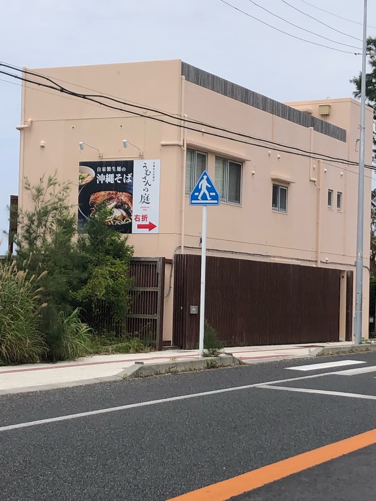
Whenever I headed north on National Route 58 in Onna Village (not the bypass, the road along the sea) this sign always caught my eye, so this time I went 😄
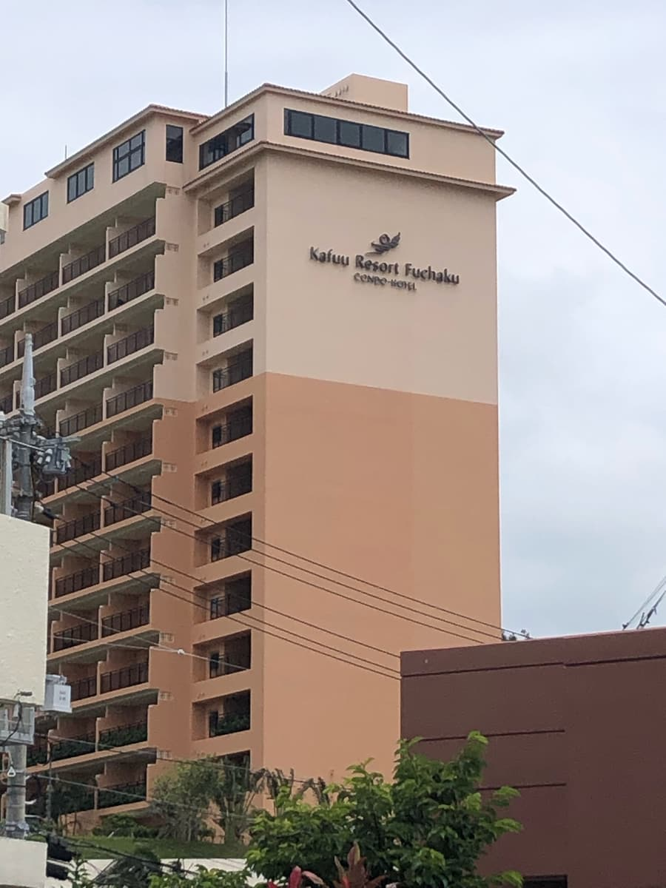
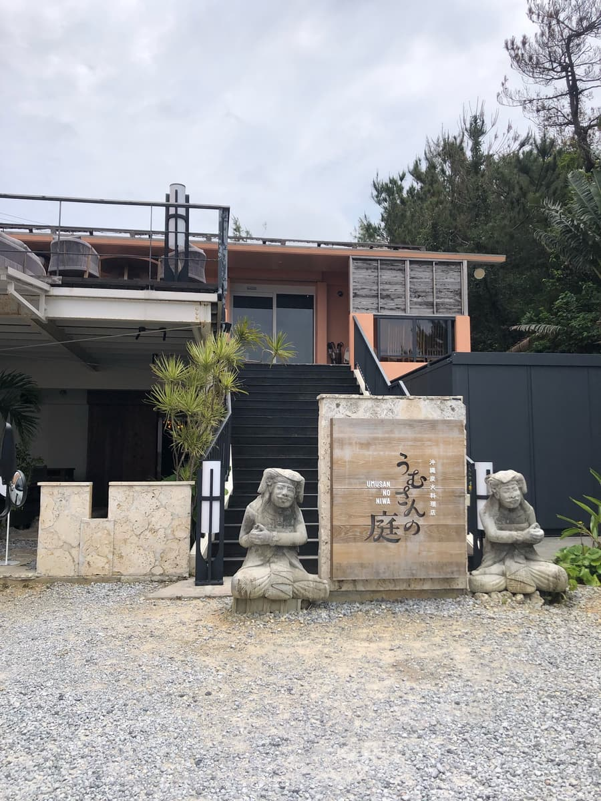
Right after turning right from the national highway, there was the shop. It's about next door to the hotel.
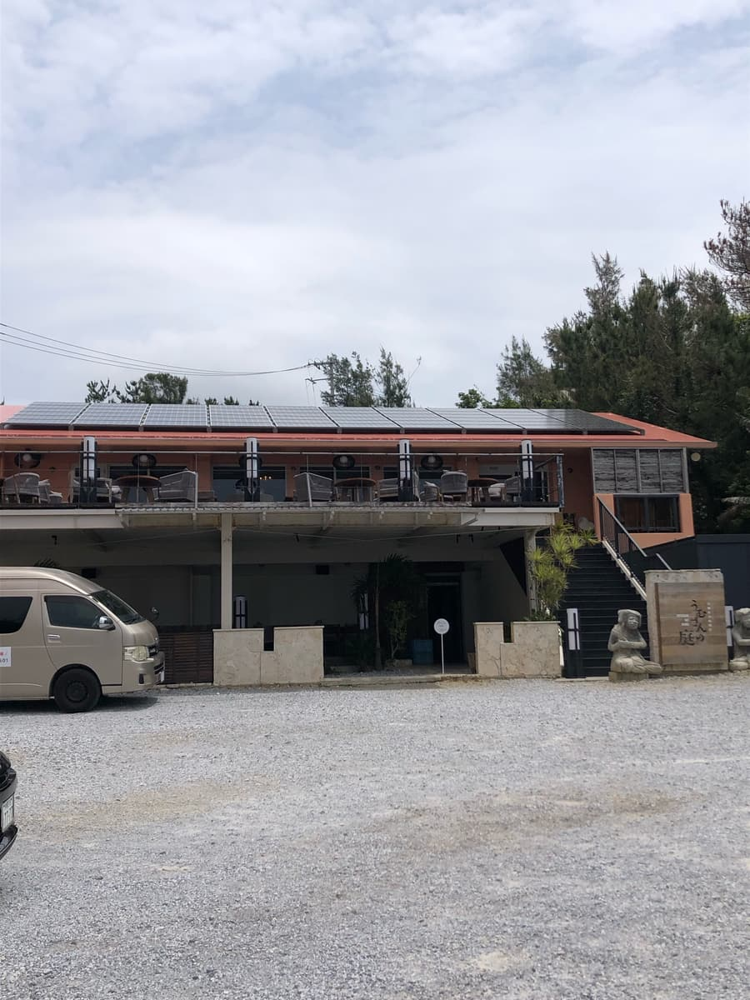
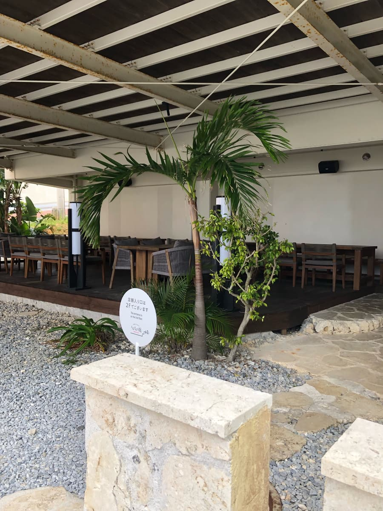
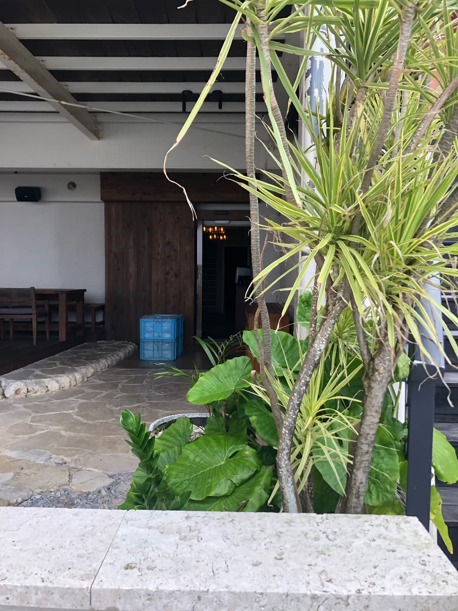
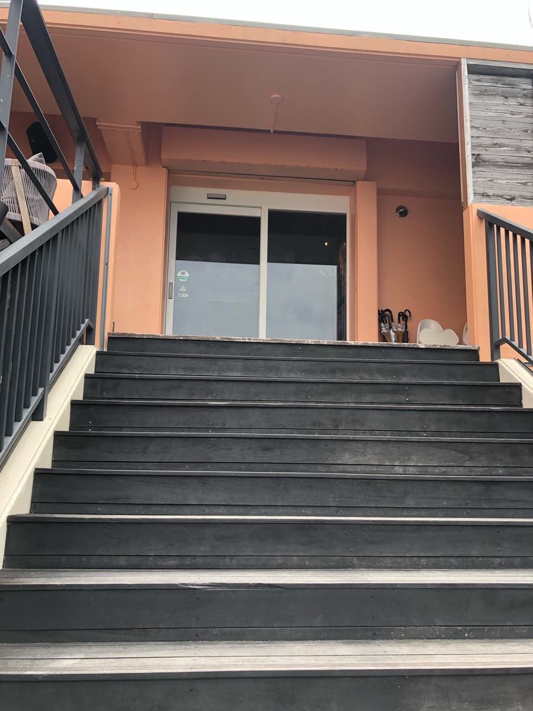
Entering the shop, I went to the seat the staff guided me to (you're assigned a shoe locker and take your shoes off). There seemed to be a few customers, and it didn't feel crowded. It's a quiet atmosphere inside.
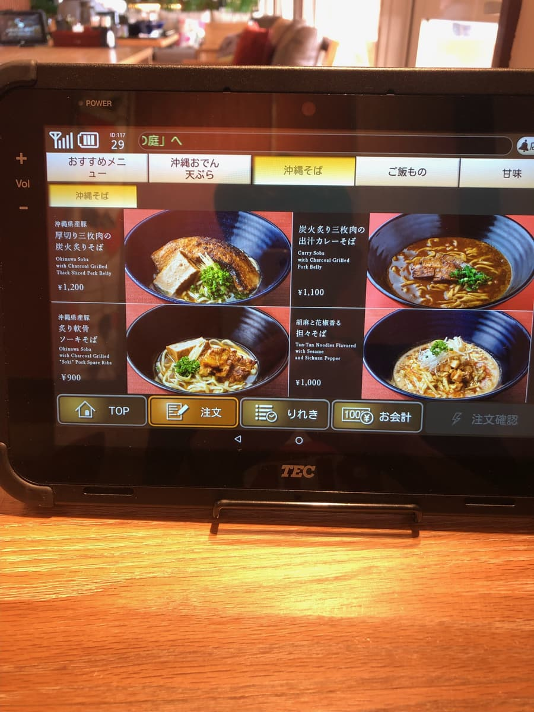
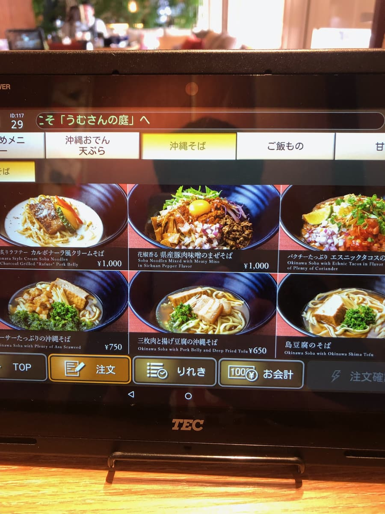
It's a stylish, creative menu of Okinawa soba. All of them look delicious, but I figured the item shown at the very top was probably the recommendation, so I decided to order the "Charcoal-Seared Thick-Cut Braised Pork Belly Soba".
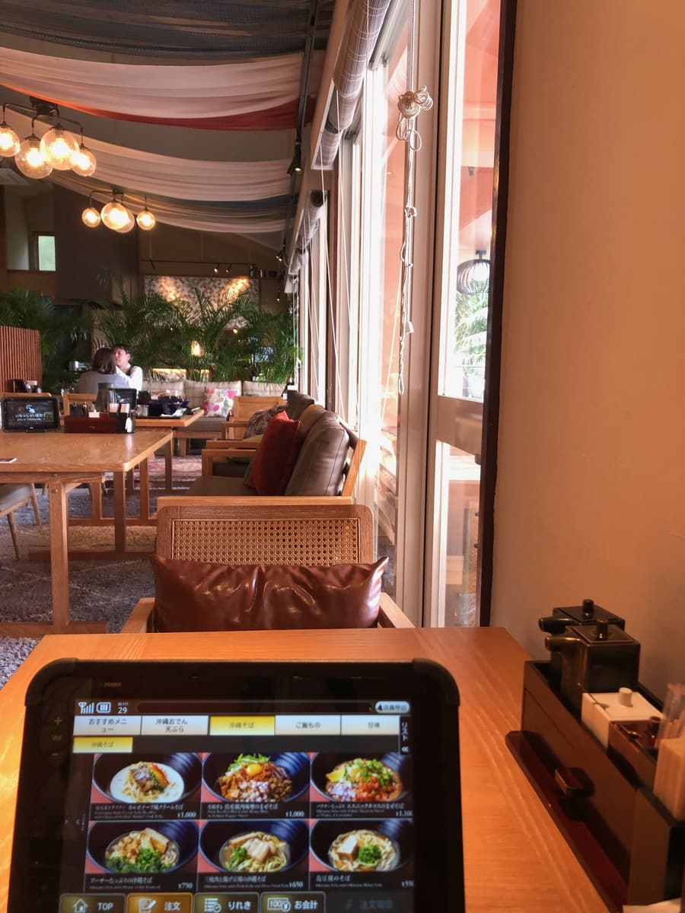
While waiting, I drank the water in my cup and thought, "? This tastes good somehow." I drank it all and went for a refill from the self-service? water pitcher away from my seat. Then the staff brought a pitcher to my seat, and inside it was lemon 😁
I see, that's why it has a refreshing taste; the lemon flavor is nice too. Stylish right down to the water.
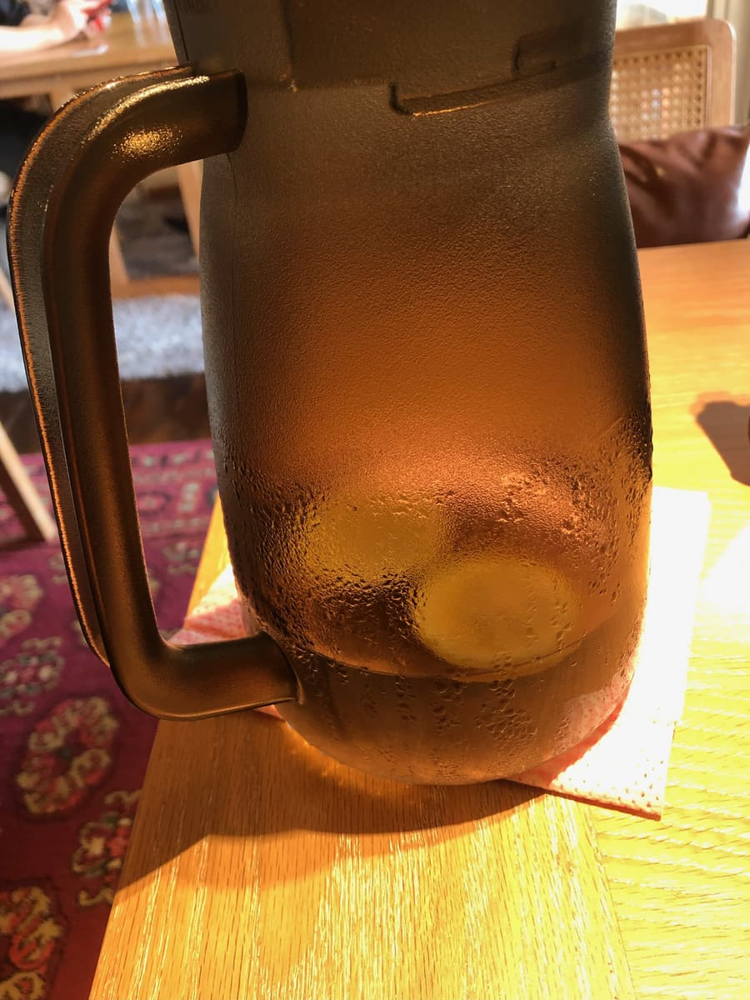
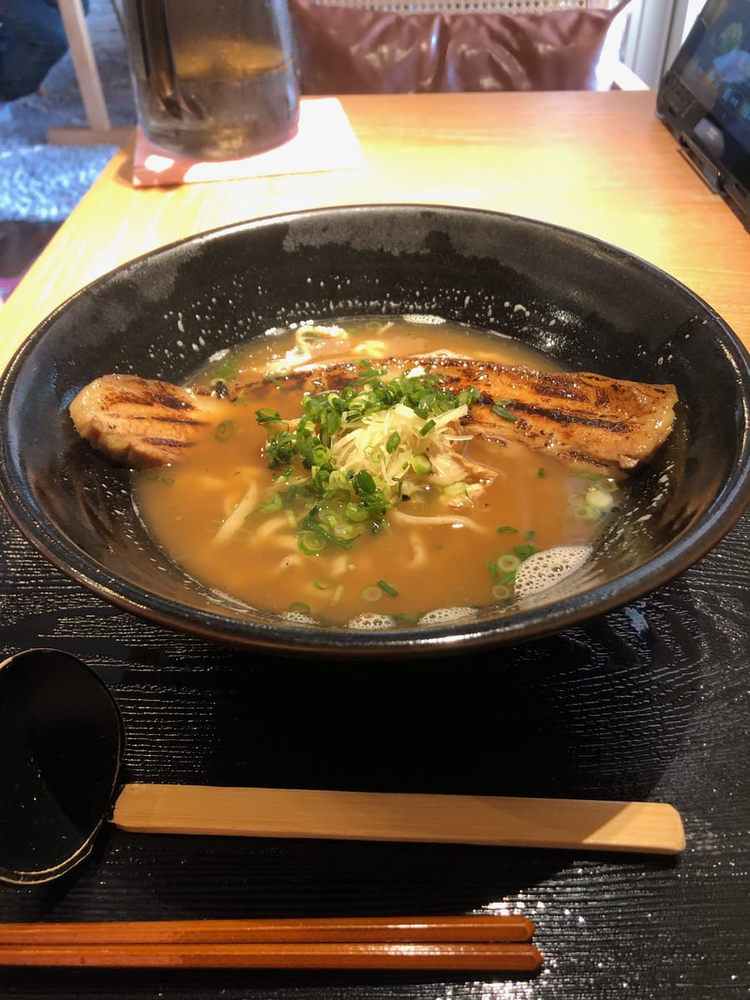
The soba came. First, the broth of course. It's a broth where the bonito stock really comes through, delicious.
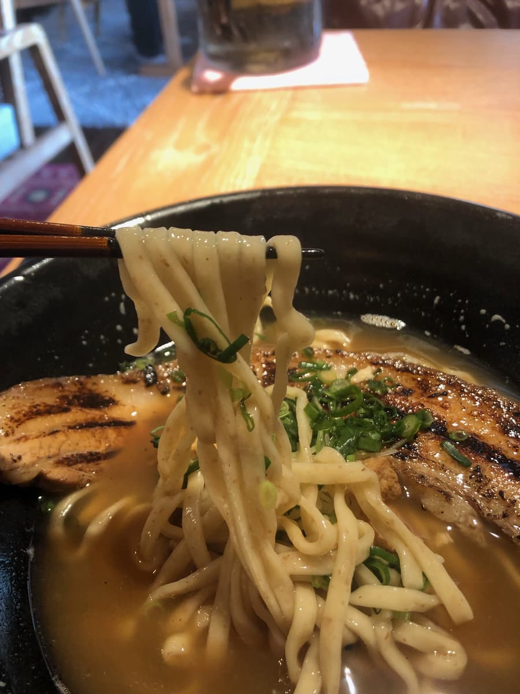
Next I have the noodles. Apparently they're homemade fresh noodles, and these too are chewy and delicious. Next, the thick-cut braised pork belly (sanmai-niku). And charcoal-seared, no less.
It's a big piece of braised pork belly (sanmai-niku), but when I lift it with my chopsticks, it breaks apart (°°) It's very tender 😁 And since it's seared over charcoal, it's fragrant and very tasty 😋
I thought it was the most delicious braised pork belly (sanmai-niku) of all the Okinawa soba shops I've eaten at so far. I recommend it.
Rating (12/15): This shop is in a sightseeing spot in Onna Village. The charcoal-seared thick-cut braised pork belly (sanmai-niku) is superb. I thought it was the best of all the Okinawa soba toppings I've eaten so far (as of February 2024). Even the water is lemon water, stylish in a way not found at other shops, so how about trying it once? I recommend it 😄
Noodles: ★★★✬☆（3.5）
Soup: ★★★✬☆（3.5）
Toppings: ★★★★★（5）